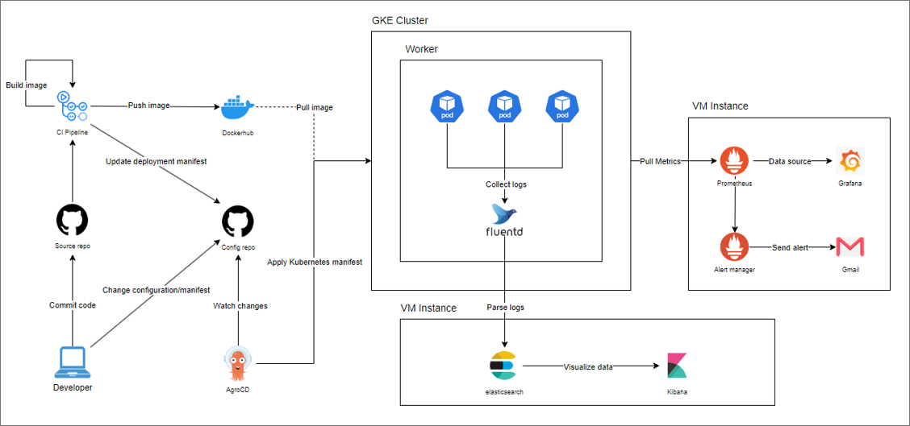
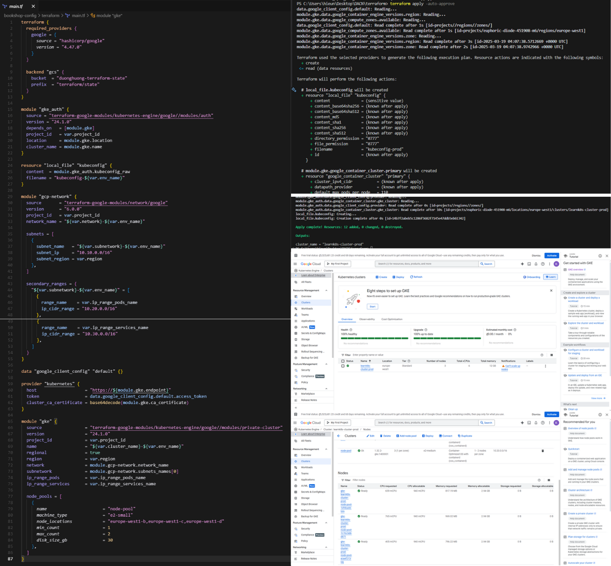
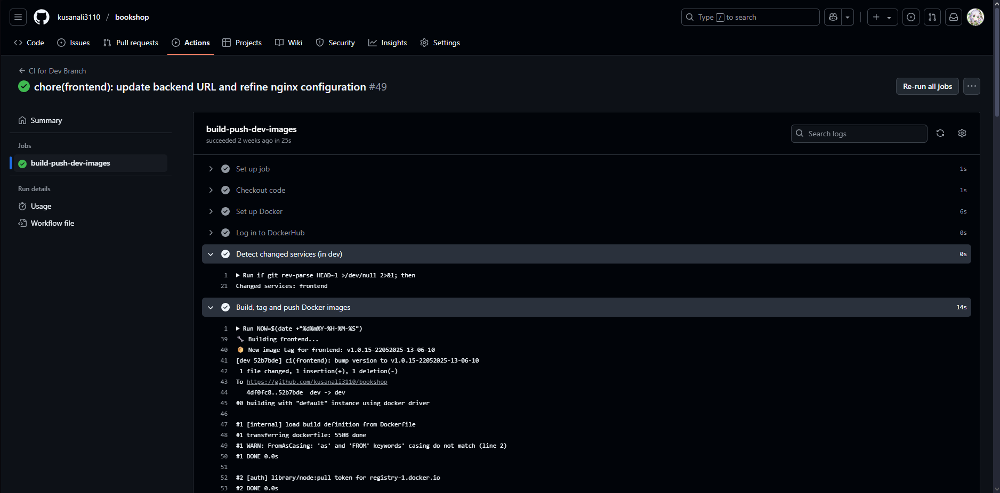
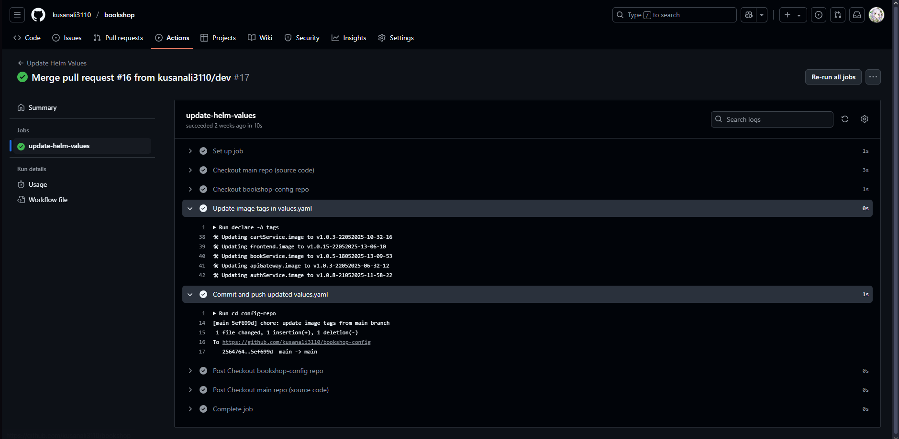
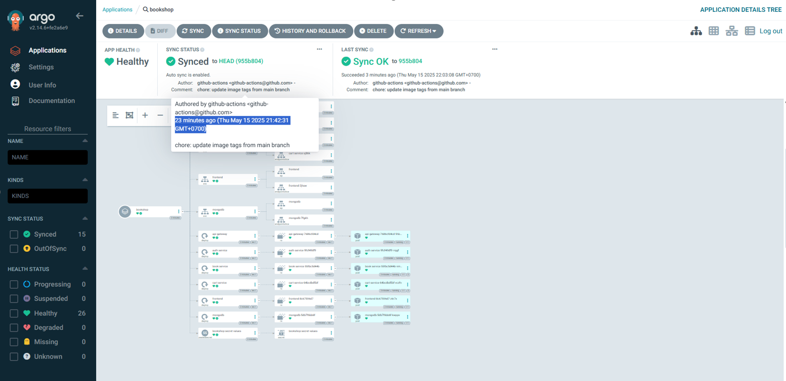
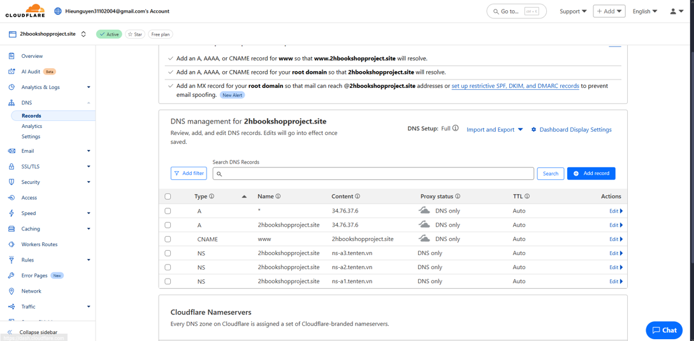
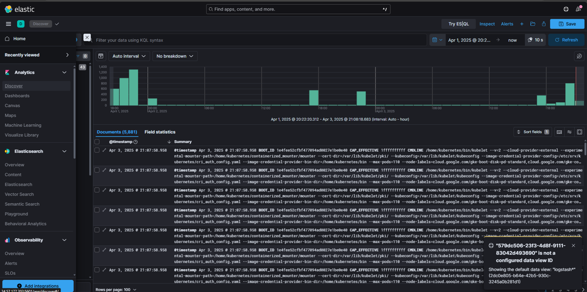
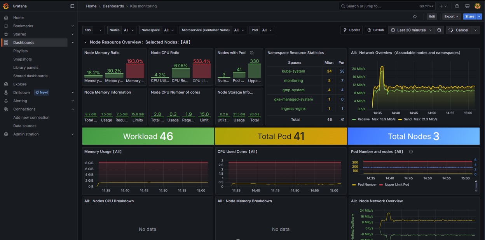
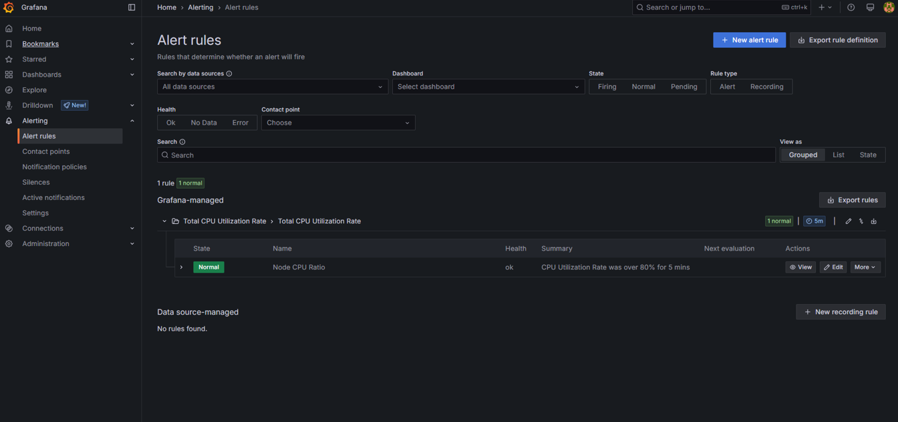

System Architecture Diagram
Explanation of Main Components
- Developer: Develops and commits code to the Source repo.
- CI Pipeline: Automatically builds images, pushes to Dockerhub, and updates manifests.
- ArgoCD: Watches for manifest changes and automatically applies them to the GKE Cluster.
- GKE Cluster: Runs pods and collects logs via Fluentd.
- Fluentd: Collects logs and sends them to Elasticsearch.
- Elasticsearch & Kibana: Stores and visualizes logs.
- Prometheus & Grafana: Collects and visualizes metrics, sends alerts via Alertmanager.
Workflow Steps
- Developer pushes code to GitHub Source repo.
- Github Actions builds and pushes Docker image, updates image tags automatically.
- After merging to main branch, Github Actions updates the deployment manifest to the manifest repo.
- ArgoCD watches for manifest changes and automatically applies them to the GKE Cluster.
- Application runs on GKE, logs and metrics are collected by Fluentd, stored in Elasticsearch and visualized by Kibana.
- Monitoring and alerting via Prometheus, Grafana, Alertmanager.
Screenshots
Using Terraform to deploy GKE Cluster
CI Pipeline for updating image tags and pushing to Dockerhub
Github Actions for updating deployment manifest to the manifest repo
ArgoCD for automatically applying deployment manifest to the GKE Cluster
DNS records for the application

Deployed web application on GKE (no longer available on the Internet due to the expiration of Google Cloud free trial)
Fluentd for collecting logs and sending them to Elasticsearch, visualized by Kibana
Prometheus for collecting metrics, visualized by Grafana
Configuring to send alerts via email